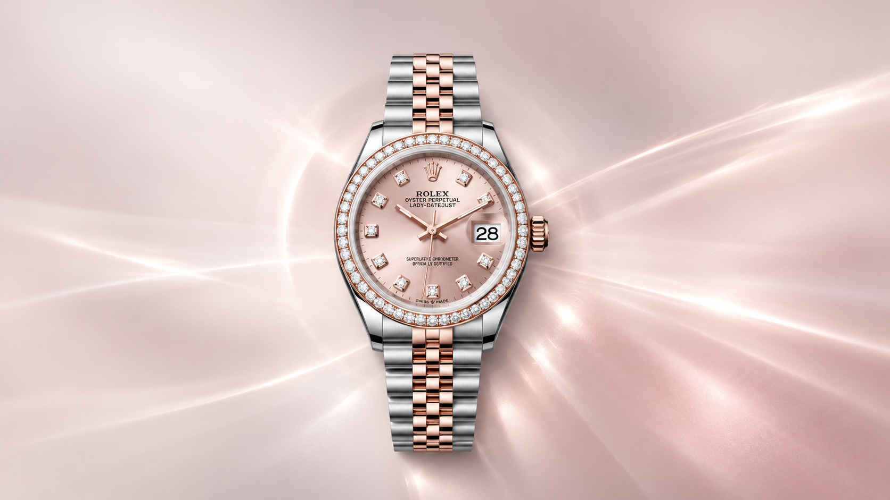

Lady-Datejust introduced
Rolex describes its first Lady-Datejust as a 25 mm date chronometer.

Small-case watchmaking with a date at three. Explore four Rolex references whose 28 mm cases, dial descriptions and bracelet pairings are verified against their individual model pages.
Rolex dates the Lady-Datejust to 1957 and describes the present 28 mm case as its smallest wristwatch with a date window. Current model pages identify calibre 2236, a self-winding movement with an approximately 55-hour power reserve.
Materials, bezel, dial and bracelet combinations vary by reference. This guide links each displayed pairing to its Rolex model page; missing model photography is called out rather than simulated.
Explore the Lady-Datejust reference range, with distinct dial, bezel and bracelet combinations.
The Lady-Datejust appeared in 1957. Rolex’s newsroom records an original 25 mm case and a move to the present 28 mm size in 2015. The date window and broader Datejust design link the generations.
These are Rolex’s history and product statements, reproduced here as attributed reference context. Venturo makes no heritage, manufacture, partnership or retail claim.
Read Rolex’s Lady-Datejust history ↗Rolex describes its first Lady-Datejust as a 25 mm date chronometer.
Rolex records the increase from 25 mm to 28 mm in its newsroom history.
The official finder lists distinct material, bezel, dial and bracelet choices across the 28 mm family.
Lady-Datejust names, references, specifications and product history are attributed Rolex reference content. Venturo does not manufacture, certify, stock or sell these watches. No prices or availability claims are reproduced.